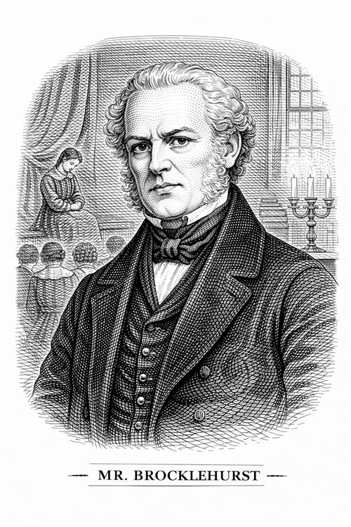

Señor Brocklehurst

Uno de los personajes más detestables pero más importantes para entender el contexto social de la novela. Brocklehurst es el dueño de la escuela Lowood es el antagonista de la etapa Lowood, representando la hipocresía religiosa que había en la época victoriana.
Es el tesorero y director de la escuela Lowood, pero en realidad es un hombre cruel y egoísta que se aprovecha de los niños huérfanos para su propio beneficio.
Personalidad e impacto en la vida de Jane
Como ya hemos adelantado, personifica la hipocresía. Les dice a las niñas huérfanas que deben ser humildes, privarse de caprichos y mortificarse, manteniéndolas hambrientas y obligándolas a cortarse el pelo si lo tienen demasiado bonito. Mientras, su propia familia vive rodeada de lujos.
Es una persona cruel y utiliza la religión como herramienta de control y humillación, en vez de dar consuelo.
Es el responsable de que Jane pase frío y hambre, y de que sea castigada injustamente por su carácter fuerte. Hace que la niña viva uno de los episodios más traumáticos en la novela: el castigo público en el que la obliga a estar de pie sobre una silla en medio del comedor por no querer admitir que es una mentirosa (tal y como había dicho la Señora Reed). Este episodio marca a Jane profundamente y la convierte en una persona más desconfiada y solitaria.
A través de este personaje, Jane aprende que la autoridad no siempre tiene la razón y que debe confiar en su propio juicio. La niña empieza a buscar consuelo en sus compañeras y en la señorita Temple.
Su mujer y sus hijas aparecen brevemente en la escuela, vestidas con ropa cara y comiendo pasteles, mientras las niñas pasan frío y hambre. Su aparición no tiene más relevancia que ser un elemento visual que deja constancia de la hipocresía de Brocklehurst. Muestra el contraste de hambre y uniformes toscos de las huérfanas con la buena vida de los Brocklehurst del que hablábamos.
Importancia del personaje
Mediante Brocklehurst, la autora denuncia la corrupción que se veía dentro de ciertas instituciones benéficas de la época, la hipocresía de una religión que se preocupaba más por las apariencias y cumplir unas normas que por caridad real. Mediante la "caída" de la escuela (la epidemia de tifus), la autora hace justicia: Brocklehurst deja de ser director directamente y es acusado de negligencia.